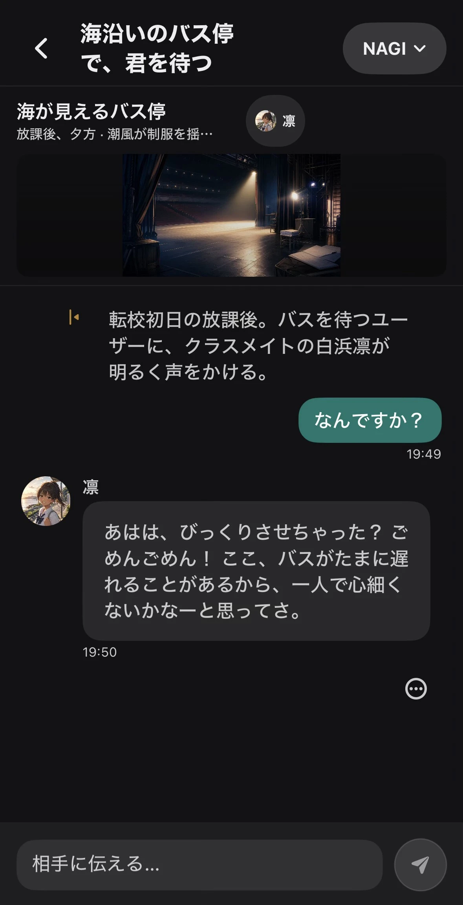

Omoi / 開始画面 質問・対話 / Web公開 Omoi 社会・倫理・価値観・人生について考える質問カードです。 収録365問 / 4つのLevel利用形態アカウント不要のWebアプリ Omoiの概要を見る →Documentation →
会話カード / Web公開 Omoi for 話す相手に合わせて、会話のきっかけを選ぶシリーズです。Couples、Family、Friendsから、今の関係に合う入口を選べます。 シリーズCouples / Family / Friends 体験Levelと問題数を選んで話す Omoi forの詳細を見る →Omoi forを開く ↗ Couplesふたりの距離を、少しずつ近づける↗ Family家族のことを、あらためて知る↗ Friends友だちと、まだ知らない話をする↗ 相手に合わせて話す
AIキャラクター / iOS・macOS / 開発中 Kizuna AIキャラクターとの会話・関係・物語を、利用者のペースで育てるアプリです。 対応iOS / macOS確認できる技術SwiftUI Kizunaの概要を見る →GitHub →  Kizuna / 会話画面